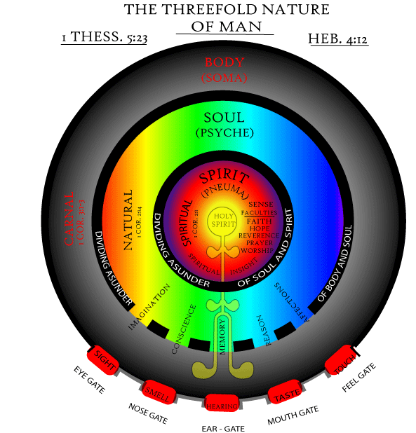
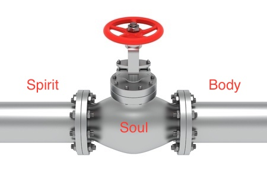

Functions of Spirit, Soul and Body
Basic functions
- Body - World conscious using the 5 senses
- Soul - Self conscious through intellect, emotions, etc
- Spirit - God conscious to communicate, serve and worship the Creator
Onion architecture

Functional Pipeline
We could also view soul as the middle man who can communicate with both the spiritual and physical realm through spirit and body respectively.

Lk 1: 46, 47
And Mary said: "My soul glorifies the Lord. And my spirit has rejoiced in God my Savior.
Inferences
- Soul glorifies (present tense). Spirit has rejoiced (perfect tense). Spirit must exult before the soul can magnify.